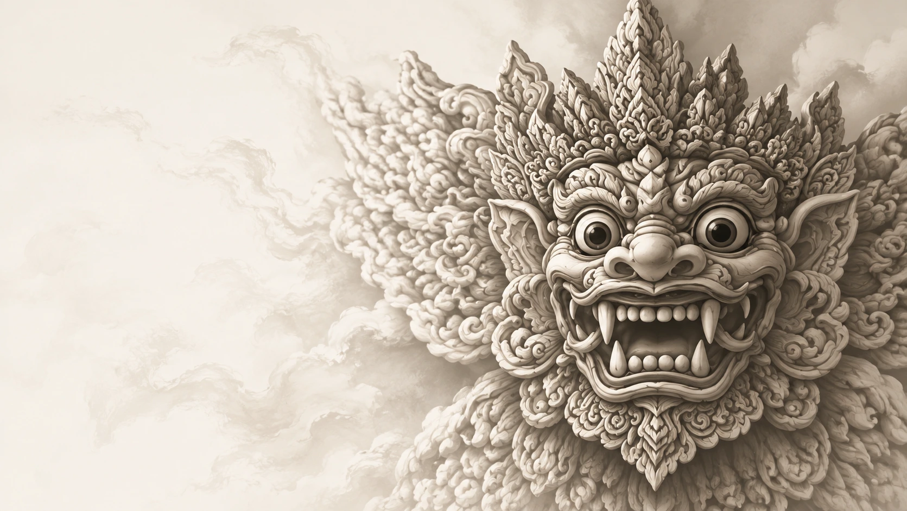

Langkah 01
Unggah Visual
Kirim foto Baju Barong milikmu. Sistem akan membaca pola visual, warna, dan motif dengan saksama.

Selamat Datang
Kenali unsur visual Barong melalui teknologi AI, dengan konteks budaya yang dilengkapi rujukan.
Tradisi dalam Genggaman Teknologi
Unggah foto Baju Barong milikmu, biarkan AI membantu mengenali unsur visual dan mengeksplorasi desain. Informasi budaya dilengkapi sumber yang dicantumkan.

Penawaran Kami
Langkah 01
Kirim foto Baju Barong milikmu. Sistem akan membaca pola visual, warna, dan motif dengan saksama.
Langkah 02
AI mendeteksi kemungkinan unsur Barong, kemudian menguraikan warna dominan, ornamen, dan gaya desain yang tampak.
Langkah 03
Baca konteks budaya beserta rujukannya, lalu jelajahi rekomendasi desain secara kreatif.
Mulai Perjalananmu
Halaman Analisis
Unggah foto Baju Barong yang ingin kamu analisis. AI membantu mengenali pola visual; konteks budaya disertai rujukan yang dapat dibaca.
Klik atau seret foto ke area ini
Pilih file gambar dari perangkatmu
Maks. 10 MB · Foto akan diproses pada server kami
Foto Terpilih
foto_barong.jpg
—
Membaca pola visual...
Sistem sedang memproses gambar untuk mengenali unsur-unsur yang terkandung.
Gambar tidak termasuk motif Barong
Mohon upload gambar lain. Barong AI hanya dapat menganalisis gambar yang memiliki unsur atau motif Barong yang dapat dikenali.
Hasil Analisis
—
Bagian 01
—
—
—
—
—
Rujukan budaya · artikel akademik
Menurut Ni Wayan Mekarini, warna dalam tradisi Bali dapat menjadi bahasa simbol yang terkait dengan arah dan dewata dalam ritual. Artikel ini menyebut lima warna utama: hitam (utara, Wisnu), putih (timur, Iswara), merah (selatan, Brahma), kuning (barat, Mahadewa), dan brumbun atau campuran (tengah, Siwa). Makna ini merujuk pada pembahasan budaya dan ritual dalam artikel, bukan penilaian atas warna baju yang diunggah.
Sumber: Ni Wayan Mekarini, “Bahasa Warna dalam Konteks Budaya Bali,” Litera: Jurnal Bahasa dan Sastra, Vol. 7 No. 1, Januari 2021, hlm. 43–51. Baca PDF sumber.
Rujukan informasi · Kementerian Pariwisata RI
Kementerian Pariwisata RI membahas Baju Barong sebagai produk khas Bali yang menjadi incaran wisatawan. Rujukan ini memberi konteks tentang popularitas dan identitas produk; artikel tersebut tidak digunakan sebagai standar untuk menilai keaslian motif pada foto.
Sumber: Kementerian Pariwisata RI, “Mengenal Baju Barong, Baju Asli Bali yang Menjadi Incaran Wisatawan”.
Catatan visual AI
—
Eksplorasi · Fitur 01
Coba variasikan warna dominan pada baju Barong-mu secara visual. Pilih palet di bawah, atau sesuaikan saturasi dan tone.
Palet Warna
Warna Asli
OriginalHasil Variasi Warna
AsliMenerapkan warna...
Eksplorasi · Fitur 02
Empat arah desain alternatif yang terinspirasi dari komposisi, motif, dan ornamen pada foto kamu — sebagai titik awal eksplorasi kreatif.
Eksplorasi Desain
Koleksi variasi warna dan gaya desain yang dapat menjadi titik awal eksplorasi kreatifmu bersama identitas Barong.
Hijau
Kesuburan · Harapan
Biru
Ketenteraman · Samudra
Merah
Keberanian · Semangat
Ungu
Kebijaksanaan · Spiritual
Earth Tone
Alami · Hangat
Gaya 01
Modern Tradisional
Perpaduan motif Barong klasik dengan komposisi visual yang lebih ringkas, cocok untuk busana sehari-hari yang tetap menonjolkan identitas.
Gaya 02
Minimalis Elegan
Eksplorasi dengan warna netral dan garis motif yang lebih tipis, memberikan kesan premium dan tenang tanpa menghilangkan ciri khas Barong.
Gaya 03
Earth Tone
Palet warna tanah (cokelat, krem, terracotta) yang menonjolkan sisi organik, hangat, dan dekat dengan alam khas Bali.
Gaya 04
Contemporary Bali
Pendekatan kontemporer dengan layout yang lebih editorial, sesuai untuk koleksi modern yang tetap berakar pada tradisi.
Label
Seluruh variasi dan rekomendasi di halaman ini merupakan eksplorasi visual yang dihasilkan melalui pendekatan AI dan tidak dimaksudkan sebagai representasi pakem budaya Bali yang resmi. Selalu konsultasikan dengan ahli budaya atau narasumber tradisi untuk informasi yang akurat dan kontekstual.
Tentang
BARONG AI lahir dari upaya mempertemukan dua dunia yang sama-sama kaya makna: tradisi lisan dan visual budaya Bali, dengan kemampuan pengolahan citra masa kini.
Kami percaya bahwa teknologi tidak harus menjauhkan kita dari akar budaya. Sebaliknya, AI dapat menjadi jembatan — membantu mengenali, mencatat, dan menyajikan kembali detail-detail visual Barong agar lebih mudah dipelajari, dihargai, dan dikembangkan dengan penuh penghormatan.
Setiap analisis yang dihasilkan BARONG AI dimaksudkan sebagai titik awal eksplorasi, bukan akhir dari sebuah pemahaman. Kami senantiasa mengingatkan pengguna untuk merujuk pada ahli budaya, narasumber tradisi, dan sumber resmi lainnya demi keakuratan makna yang sesungguhnya.
AI Vision
Analisis Visual
Klasifikasi
Deteksi Visual
Budaya
Konteks Bali

Filosofi
Rwa Bhineda — dua sisi yang berlawanan menjaga keseimbangan dunia.
Rujukan yang dapat diperiksa
Artikel Ni Wayan Mekarini menguraikan lima warna yang dikaitkan dengan arah dan dewata dalam konteks ritual: hitam–utara–Wisnu, putih–timur–Iswara, merah–selatan–Brahma, kuning–barat–Mahadewa, dan brumbun/campuran–tengah–Siwa.
Ni Wayan Mekarini, “Bahasa Warna dalam Konteks Budaya Bali,” Litera: Jurnal Bahasa dan Sastra, Vol. 7 No. 1 (2021), hlm. 43–51. Buka PDF artikel.
Kementerian Pariwisata RI mengangkat Baju Barong sebagai produk khas Bali yang diminati wisatawan. Artikel ini memberi konteks pariwisata; bukan dasar untuk mengesahkan keaslian motif tertentu.
Informasi di bagian ini berasal dari sumber yang dicantumkan. AI hanya memberi contoh analisis visual; persentase keyakinannya bukan penilaian budaya atau sertifikat keaslian.